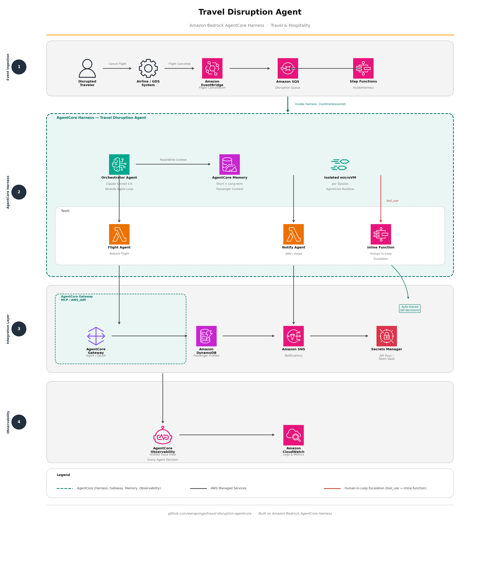

Every day, tens of thousands of flights are cancelled or delayed. Each disruption triggers a manual cascade: gate agents rebook passengers one by one, hotel rooms are arranged over the phone, compensation vouchers are calculated by hand. The average resolution time exceeds 45 minutes per passenger. At scale, this is an operational crisis.
Amazon Bedrock AgentCore harness turns that cascade into a configuration problem. You declare what the agent does — which model, which tools, what memory — and the harness runs it in a stateful, isolated microVM with built-in session persistence, secure tool connectivity, and end-to-end observability. No orchestration loop to write. No container to manage.
This post walks through building an autonomous travel disruption agent that detects a flight cancellation, recovers every affected passenger in parallel, and delivers a resolved itinerary in under 10 seconds. The agent handles flight rebooking, hotel placement, compensation calculation, and traveler notification through five Lambda-backed sub-agents exposed as tools via AgentCore Gateway. Human escalation for edge cases — unaccompanied minors, medical needs — is handled through an inline function that pauses the agent and routes to a human agent.
Solution overview
The architecture has five layers.
- Event ingestion. Amazon EventBridge captures the flight cancellation event from the airline GDS system and fans it into Amazon SQS. AWS Step Functions triggers the harness through the
InvokeHarnessstate for pipeline-orchestrated runs. - AgentCore Harness. An orchestrator agent powered by Claude Sonnet 4.6 runs in an isolated microVM per passenger session. It reads and writes traveler context through AgentCore Memory, then fans out to five sub-agent tools.
- Sub-agent tools. Five Lambda functions — Flight Agent, Hotel Agent, Compensation Agent, Notify Agent, and Inline Function (human-in-loop escalation) — are declared as tools on an AgentCore Gateway. The demo repository deploys Flight Agent and Notify Agent (Path B); the remaining tools follow the identical CDK pattern.
- Integration layer. AgentCore Gateway provides governed, audited connectivity to the airline GDS API and hotel booking API using SigV4 and OAuth. Amazon DynamoDB stores passenger profiles and booking state. Amazon SNS delivers the resolved itinerary to the traveler. Secrets Manager holds API keys and the Token Vault for credential rotation.
- Observability. AgentCore Observability provides a unified trace of every agent decision across every capability — model calls, tool invocations, memory reads — in one view. Amazon CloudWatch captures logs and metrics.

Five-layer architecture: external actors, event ingestion, AgentCore Harness with sub-agent tools, integration layer, and observability.
Creating the harness
With AgentCore harness, the agent is a set of parameters passed to create_harness. No orchestration code, no retry logic, no streaming parser.
import boto3
control_client = boto3.client("bedrock-agentcore-control", region_name="us-east-1")
harness_params = {
"harnessName": "travel-disruption-agent",
"executionRoleArn": execution_role_arn,
"model": {
"bedrockModelConfig": {"modelId": "us.anthropic.claude-sonnet-4-6"}
},
"systemPrompt": [{
"text": (
"You are an autonomous travel disruption recovery agent. "
"When a flight is cancelled, you must: "
"1. Rebook the passenger on the next available flight in the same class. "
"2. If overnight delay, book a hotel near the departure airport. "
"3. Calculate and issue compensation per the passenger loyalty tier policy. "
"4. Send the passenger a complete summary of all changes. "
"5. Escalate to a human agent for special handling needs. "
"Always act on behalf of the passenger. Never ask unnecessary clarifying questions."
)
}],
"tools": [{
"type": "agentcore_gateway",
"name": "travel-gateway",
"config": {
"agentCoreGateway": {
"gatewayArn": gateway_arn,
"outboundAuth": {"awsIam": {}}
}
}
}],
# Scope to exactly the three tools the gateway exposes.
# Format: {GatewayTargetName}___{toolName}
# The prefix is the gateway TARGET resource name, not the gateway name.
# Avoids the ~900-token overhead of shell and file_operations.
"allowedTools": [
"FlightRebookingTarget___rebook_flight",
"TravelerNotificationTarget___notify_traveler",
"escalate_to_agent",
],
"maxIterations": 15,
"timeoutSeconds": 120,
}
# Attach memory for passenger context persistence across sessions
harness_params["memory"] = {
"agentCoreMemoryConfiguration": {"arn": memory_arn}
}
response = control_client.create_harness(**harness_params)
harness_arn = response["arn"] # API returns 'arn', not 'harnessArn'
That is the entire agent. The orchestration loop, tool selection, tool invocation, result injection, error handling, and session management are all handled by the harness.
Declaring tools through AgentCore Gateway
Two Lambda functions back the tools in this demo deployment. Each is registered on the gateway with a schema description precise enough for the model to select the right tool from natural language. The gateway handles inbound authentication, outbound SigV4 signing, and access control policy enforcement.
Here is the flight rebooking tool declaration:
gateway_client = boto3.client("bedrock-agentcore-control", region_name="us-east-1")
gateway_client.create_gateway_target(
gatewayId=gateway_id,
name="FlightRebookingTarget",
# GATEWAY_IAM_ROLE: gateway uses its service role to invoke Lambda.
# The credentialProvider sub-object must NOT be set for Lambda targets.
credentialProviderConfigurations=[{
"credentialProviderType": "GATEWAY_IAM_ROLE",
}],
targetConfiguration={
"mcp": {
"lambda": {
"lambdaArn": rebook_flight_lambda_arn,
"toolSchema": {
"inlinePayload": [{
"name": "rebook_flight",
"description": (
"Find the next available flight matching the passenger's original route "
"and class, and rebook them. Use when a flight has been cancelled or "
"significantly delayed and a new flight must be confirmed. "
"Returns the new flight details including confirmation number."
),
"inputSchema": {
"type": "object",
"properties": {
"passenger_id": {"type": "string"},
"origin": {"type": "string", "description": "IATA origin code"},
"destination": {"type": "string", "description": "IATA destination code"},
"original_flight": {"type": "string", "description": "Cancelled flight number"},
"cabin_class": {"type": "string", "description": "economy | business | first"},
"max_hours": {"type": "integer"},
},
"required": ["passenger_id", "origin", "destination", "original_flight", "cabin_class"],
},
}]
}
}
}
}
)
The hotel and compensation tools follow the same pattern. The escalate_to_agent tool is declared as an inline function — it executes on the client side, not on the harness VM. When the agent calls it, execution pauses and the call is returned to the invoking code for human handling.
Invoking the harness per disrupted passenger
When EventBridge fires a cancellation event, a Lambda processor queries DynamoDB for all affected passengers and invokes the harness once per passenger, each with a unique runtimeSessionId. Every session runs in its own isolated microVM with its own memory and filesystem.
import boto3, uuid, json
runtime_client = boto3.client("bedrock-agentcore", region_name="us-east-1")
def handle_disruption(passenger: dict, cancelled_flight: str) -> None:
# runtimeSessionId must be at least 33 characters
session_id = str(uuid.uuid4()) + f"-{passenger['passenger_id']}"
response = runtime_client.invoke_harness(
harnessArn=HARNESS_ARN,
runtimeSessionId=session_id,
messages=[{
"role": "user",
"content": [{
"text": (
f"Flight {cancelled_flight} has been cancelled. "
f"Passenger: {passenger['name']}, "
f"Loyalty tier: {passenger['tier']}, "
f"Seat preference: {passenger['seat_preference']}, "
f"Hotel preference: {passenger['hotel_brand']}. "
f"Please recover this passenger completely."
)
}]
}],
)
# Stream the response and handle human escalation
handle_stream(response["stream"], session_id, passenger)
runtimeSessionId must be at least 33 characters.
Reusing the same session ID in a follow-up invocation continues the conversation in the
same environment, with full memory of what was previously done for that passenger.
Handling human-in-the-loop escalation with inline functions
The escalate_to_agent tool is an inline function. When the orchestrator determines that a passenger needs special handling, it calls the tool and the harness returns a stopReason of tool_use instead of completing the turn. The invoking code intercepts the call, routes to a human agent, and sends the result back.
def handle_stream(stream, session_id: str, passenger: dict) -> None:
tool_use_id = None
tool_name = None
tool_input_buf = ""
for event in stream:
# Print agent reasoning and final response text
if "contentBlockDelta" in event:
delta = event["contentBlockDelta"].get("delta", {})
if "text" in delta:
print(delta["text"], end="", flush=True)
if "toolUse" in delta:
tool_input_buf += delta["toolUse"].get("input", "")
# Capture inline function call metadata
if "contentBlockStart" in event:
start = event["contentBlockStart"].get("start", {})
if "toolUse" in start:
tool_use_id = start["toolUse"]["toolUseId"]
tool_name = start["toolUse"]["name"]
# Agent paused — handle the inline function client-side
if "messageStop" in event:
stop_reason = event["messageStop"].get("stopReason")
if stop_reason == "tool_use" and tool_name == "escalate_to_agent":
escalation_input = json.loads(tool_input_buf) if tool_input_buf else {}
human_result = route_to_human_agent(passenger, escalation_input)
# Both toolUse and toolResult must be sent together
runtime_client.invoke_harness(
harnessArn=HARNESS_ARN,
runtimeSessionId=session_id,
messages=[
{
"role": "assistant",
"content": [{
"toolUse": {
"toolUseId": tool_use_id,
"name": tool_name,
"input": escalation_input,
}
}],
},
{
"role": "user",
"content": [{
"toolResult": {
"toolUseId": tool_use_id,
"content": [{"text": human_result}],
"status": "success",
}
}],
},
],
)
Both the assistant toolUse message and the toolResult must be sent together in the follow-up call. The harness does not persist the inline function turn automatically — requiring the client to send both keeps the session in a clean state regardless of whether the client completes the tool call.
Memory: the agent always knows what it did
AgentCore Memory stores the full conversation history for each runtimeSessionId. When a disrupted traveler calls support after receiving their new itinerary — "Why was I put on the 6 PM flight instead of the 4 PM?" — the agent answers from memory without re-querying any systems.
# Follow-up invocation — same session ID, full context available
response = runtime_client.invoke_harness(
harnessArn=HARNESS_ARN,
runtimeSessionId=session_id, # same session as the recovery run
messages=[{
"role": "user",
"content": [{"text": "Why was I put on the 6 PM flight?"}]
}],
)
The agent answers correctly because it remembers that the 4 PM flight was full in the passenger's cabin class, and the 6 PM was the next available matching flight. No re-querying, no context window management, no history concatenation in the caller.
Memory persists across microVM lifecycles. Even after a session expires and a new microVM is allocated, the conversation history is available to the next session with the same ID.
AgentCore Gateway: secure tool connectivity without credential sprawl
The Flight and Hotel agents call external APIs — airline GDS systems and hotel booking APIs — that require API keys and OAuth tokens. Rather than storing credentials in Lambda environment variables and managing them per function, all external connectivity is centralized in AgentCore Gateway.
The gateway resolves credentials at invocation time from the Token Vault using ${arn:...} references in header values. Credentials are never exposed to the harness VM or the Lambda functions.
# Gateway target for GDS API — API key resolved at invocation time
gateway_client.create_gateway_target(
gatewayId=gateway_id,
name="gds-api-target",
targetConfiguration={
"openApi": {
"url": "https://api.airline-gds.example.com/v2",
"headers": {
# Token Vault ARN — resolved to actual credential at call time
"x-api-key": (
"${arn:aws:bedrock-agentcore:us-east-1:"
"123456789012:token-vault/default/"
"apikeycredentialprovider/gds-api-key}"
)
}
}
}
)
Every tool call through the gateway is logged, policy-checked, and traceable. If a tool is misconfigured or the downstream API is unavailable, the gateway returns a structured error that the agent can reason about and retry or escalate.
Observability: every decision in one view
AgentCore Observability automatically traces every action the agent takes — model calls, tool invocations, memory reads and writes, inline function pauses — without any instrumentation code. The unified trace view shows the complete reasoning chain for each passenger recovery session.
This is the operational difference from running agents on general-purpose compute. Instead of correlating CloudWatch log groups across multiple Lambda functions and a model API, you get one trace per passenger session that shows exactly what the agent decided, which tool it called, what the tool returned, and how the agent used that result.
For the disruption scenario, this means an airline operations team can audit any rebooking decision: why this flight was chosen, when the hotel was booked, what compensation amount was calculated, and whether a human agent was involved — all from a single trace.
Step Functions integration for batch recovery
When a major weather event cancels hundreds of flights simultaneously, the recovery runs as a Step Functions state machine. The InvokeHarness state type provides native integration without a Lambda proxy.
{
"Comment": "Batch passenger disruption recovery",
"StartAt": "FetchAffectedPassengers",
"States": {
"FetchAffectedPassengers": {
"Type": "Task",
"Resource": "arn:aws:states:::dynamodb:scan",
"Parameters": {
"TableName": "PassengerProfiles",
"FilterExpression": "cancelled_flight = :flight",
"ExpressionAttributeValues": {
":flight": {"S.$": "$.cancelledFlight"}
}
},
"Next": "RecoverPassengersInParallel"
},
"RecoverPassengersInParallel": {
"Type": "Map",
"ItemsPath": "$.Items",
"MaxConcurrency": 50,
"Iterator": {
"StartAt": "InvokeHarness",
"States": {
"InvokeHarness": {
"Type": "Task",
"Resource": "arn:aws:states:::bedrock-agentcore:invokeHarness",
"Parameters": {
"HarnessArn": "arn:aws:bedrock-agentcore:us-east-1:123456789012:harness/travel-disruption-agent",
"RuntimeSessionId.$": "States.Format('{}-{}', $$.Execution.Name, $.passenger_id)",
"Messages": [{
"Role": "user",
"Content": [{
"Text.$": "States.Format('Recover passenger {} on cancelled flight {}', $.name, $.cancelled_flight)"
}]
}]
},
"End": true
}
}
},
"End": true
}
}
}
Step Functions handles concurrency, retries, error handling, and progress tracking. The harness handles the agent logic. No orchestration code is needed in either layer.
What the harness specifically reduced for this project
The solution does not require any agent orchestration code. No model call loop, no tool dispatcher, no streaming parser, no retry logic, no container image, no compute provisioning.
What we did write
- An EventBridge rule and SQS consumer (30 lines) that trigger recovery per passenger.
- A DynamoDB schema for passenger profiles and booking state.
- Two Lambda tool functions (Flight Agent and Notify Agent) that contain only the business logic for that tool. No agent awareness. Hotel Agent and Compensation Agent follow the identical pattern to extend.
- A
create_harnesscall (40 lines) during stack deployment. - A stream handler (50 lines) for inline function escalation.
What the harness eliminated
- The agent loop (call model → receive tool call → invoke tool → return result → repeat).
- Tool routing logic.
- Memory retrieval and context formatting.
- Session isolation and state management.
- Observability instrumentation.
Changing agent behavior — different model, new tool, updated system prompt, adjusted timeout — is an API call, not a code deployment. The agent definition is configuration that lives outside the application code and can be versioned, tested, and rolled back independently.
When to use AgentCore Runtime instead
AgentCore harness works well for agents where the core pattern is: receive a prompt, pick a tool, call it, receive the result, and continue until done. The travel disruption scenario fits this pattern well — the orchestrator selects tools based on what needs to happen next, and the tools are independent and stateless.
If your agent requires custom orchestration logic between turns — running a LangGraph state machine, pre-processing model inputs, executing arbitrary Python before and after each model call — AgentCore Runtime gives you full control. Both the harness and Runtime run on the same underlying infrastructure: microVMs, Memory, Gateway, and Observability. You can start with the harness and move to Runtime as complexity grows.
Prerequisites
To deploy this solution, you need the following:
- An AWS account with permissions to create IAM roles, Lambda functions, DynamoDB tables, EventBridge rules, SQS queues, and AgentCore resources.
- Python 3.10 or later.
- AWS CLI 2.x configured with credentials in a supported region.
- Access to
us.anthropic.claude-sonnet-4-6in Amazon Bedrock. - An IAM execution role the harness can assume. See the execution role policy for minimum permissions.
Conclusion
AgentCore harness lets you build a production-grade autonomous recovery agent without writing orchestration code. The agent handles tool selection, parallel session isolation, conversation memory, human escalation, and end-to-end observability through configuration and per-invocation parameters.
For the travel and hospitality industry, this changes the economics of disruption recovery. A weather event that previously required 50 gate agents working for hours can be handled by a harness running hundreds of parallel sessions, each resolving one passenger completely in under 10 seconds, with every decision auditable in the AgentCore Observability trace view.
For agents with straightforward tool-calling patterns, the harness removes operational overhead and lets you iterate behavior at the speed of a configuration change.
To get started with AgentCore harness, visit the AgentCore harness documentation or explore the Amazon Bedrock AgentCore product page for pricing and availability.